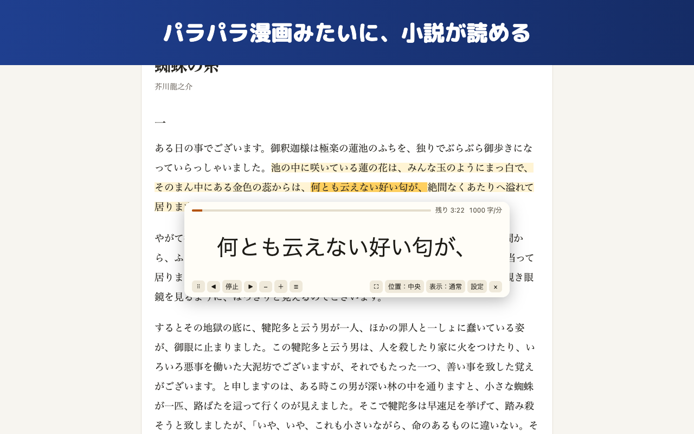
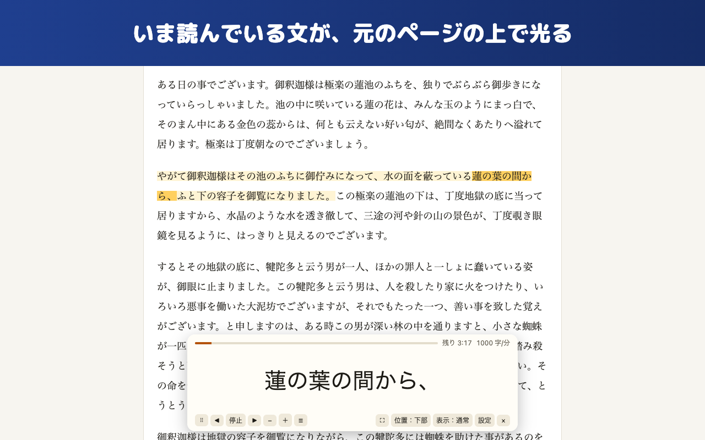

できること
日本語は文節で区切る
「は」「の」だけが1コマに出ません。読点・句点までの息継ぎ単位でまとめて表示します。
読んでいる所が光る
いま読んでいる文を元のページの上でハイライト。止めれば、そのまま普通に読めます。
選択も右クリックもいらない
Alt+V（Mac は Option+V）で読める範囲に枠が出ます。段落をクリックすればそこから。
外部送信はしない
処理はすべてパソコンの中。解析ツール・広告・アカウント登録はありません。
画面


開発を応援する ☕
パラパラは無料で、利用の上限もありません。気に入っていただけたら、コーヒー1杯分の応援をいただけると開発の励みになります。
☕ OFUSE で応援する